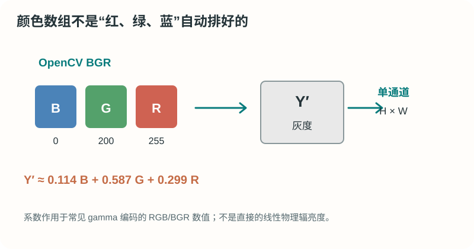
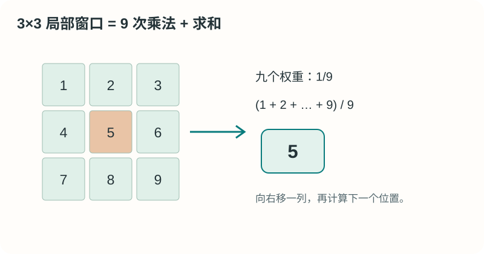
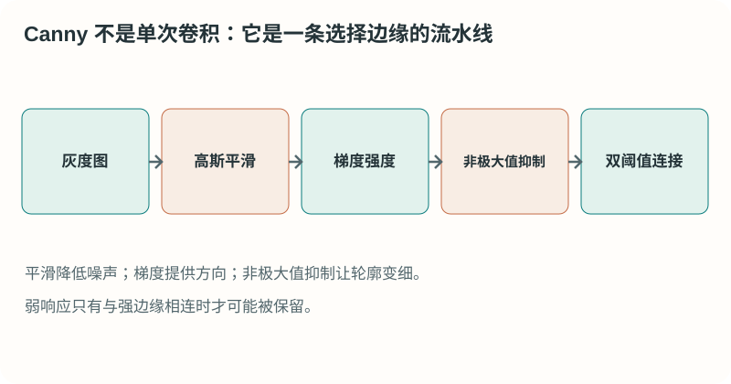
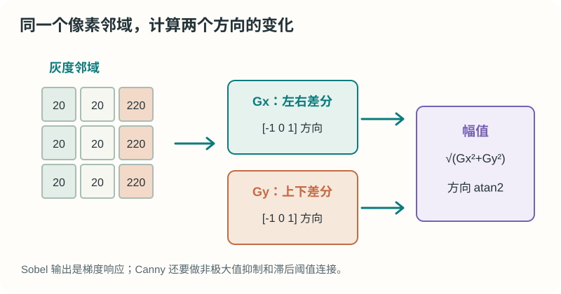
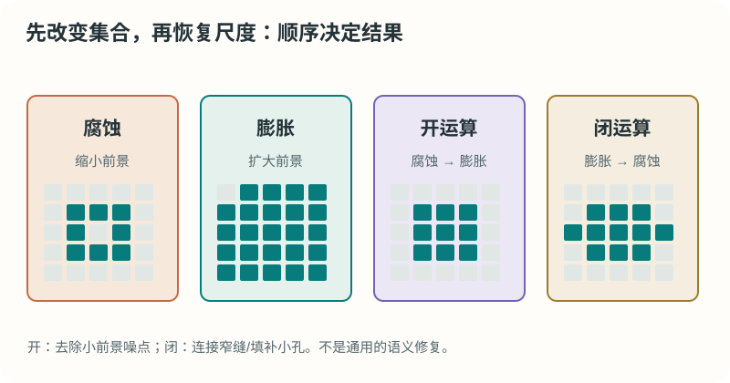

CHAPTER 02 · IMAGE PROCESSING
数字图像处理：从像素到边缘
在识别“这是什么”之前，先理解“这个像素怎样与邻居发生关系”。颜色、滤波、梯度和集合操作都可以精确计算。
图像文件与像素张量不是一回事
PNG 与 JPEG 描述的是编码文件，解码后的图像才是可计算数组。单通道灰度图常为 (H,W)，彩色图常为 (H,W,C)。OpenCV 的 imread 常默认 BGR 顺序，而 Matplotlib 往往假设 RGB；如果误把 BGR 当成 RGB，颜色会被交换。
8 位通道的 255 只是一个编码值。对准确的亮度测量，sRGB 伽马、线性光强、白点和色域都会影响物理解释。HSV 适合按色相阈值描述颜色，但色相在低饱和度区域不稳定；Lab 常用于感知色差相关分析，也应注明转换前提和范围。

OpenCV 的彩色 imread 默认返回 BGR；常见灰度转换近似使用 Y′=0.114B+0.587G+0.299R。这里的 Y′ 是 gamma 编码值的加权亮度，不等同于先反 gamma 后的物理线性亮度。RGB/BGR 转换错误会直接影响阈值分割、颜色特征和可视化。
这是常见 8-bit BGR/RGB 灰度转换的系数表达；具体转换代码仍应使用库函数与明确的颜色空间。
一次滤波究竟计算了什么？
局部线性滤波对每个输出位置取附近像素，与核的对应系数逐项相乘后求和。若九个值为 1 至 9，且均值核所有系数为 1/9，结果就是 5。移动窗口得到多个输出，边缘是否补零、镜像或复制会改变结果。

这是相关运算（cross-correlation），求和范围为核的有限支撑域；严格数学卷积需要翻转核。
高斯滤波按空间距离分配较大或较小的正权重，常用于降低近似高斯噪声。中值滤波选择窗口的中位数，是非线性操作，对孤立离群值常比均值更稳健。双边滤波还考虑像素值相似性，跨强边界通常赋予更低权重，但计算开销和参数敏感性也更大。
从梯度到轮廓：Sobel 与 Canny 不同
Sobel 卷积核近似求出水平梯度与垂直梯度，结合二者计算边缘幅值与方向；它并不自带完整的细化与连接机制。Canny 则进一步使用平滑、非极大值抑制、双阈值和滞后连接：沿梯度方向仅保留局部最强候选，从较可信的强边缘出发连接符合条件的弱边缘。


对灰度图像 I，常见梯度幅值写作 G=√(Gx²+Gy²)，方向为 θ=atan2(Gy,Gx)。OpenCV 的 Canny 默认 L2gradient=False 时使用近似的 L1 幅值；设置为 True 才使用欧氏幅值。若噪声很强，先求梯度会把噪声放大；若高阈值过大，真实轮廓可能断裂。阈值数值跟输入动态范围有关，不能对所有图像固定套用。
Gx 与 Gy 是沿列、行方向的离散导数估计；角度使用 atan2(Gy,Gx)，避免除以零与象限丢失。
膨胀、腐蚀与开闭运算操作的是集合
对二值前景掩码，膨胀扩张前景集合，腐蚀保留足以包含结构元素的中心位置。开运算（腐蚀后膨胀）常去除细小孤岛；闭运算（膨胀后腐蚀）常填补小间隙。效果取决于结构元素形状、前景极性和边界规则。

若前景用白色表示，腐蚀要求结构元素覆盖范围内的像素满足前景条件；膨胀则在结构元素覆盖处扩张前景。开运算常用于清理小前景噪点，闭运算常用于连接窄缝，但若结构元素太大，也可能把相邻物体粘连。
最小可复现实验：平滑、边缘、闭运算
安装 python -m pip install numpy opencv-python 后运行。下面构造矩形而不是下载任何照片；测试只检查算子的类型和输出，不模拟论文基准。
import cv2
import numpy as np
# 明确颜色通道：BGR 红色转换到灰度应约为 76
red_bgr = np.array([[[0, 0, 255]]], dtype=np.uint8)
red_gray = cv2.cvtColor(red_bgr, cv2.COLOR_BGR2GRAY)
assert int(red_gray[0, 0]) == 76
bgr = np.zeros((80, 120, 3), dtype=np.uint8)
bgr[20:60, 30:90] = (0, 200, 255) # BGR
gray = cv2.cvtColor(bgr, cv2.COLOR_BGR2GRAY)
blur = cv2.GaussianBlur(gray, (5, 5), sigmaX=1)
edges = cv2.Canny(blur, 40, 100)
closed = cv2.morphologyEx(
edges, cv2.MORPH_CLOSE, np.ones((3, 3), dtype=np.uint8)
)
assert gray.shape == edges.shape == closed.shape == (80, 120)
assert gray.dtype == edges.dtype == closed.dtype == np.uint8
assert set(np.unique(edges)).issubset({0, 255})
assert np.count_nonzero(edges) > 0
print("edge pixels:", int(np.count_nonzero(edges)))输入相机图像时，应先确认 BGR/RGB、bit depth 和是否需要灰度化。实际边缘像素数量随噪声和阈值变化，不能当作跨版本固定断言。
独立验证：闭运算连接一像素间隙
import cv2
import numpy as np
mask = np.zeros((7, 7), dtype=np.uint8)
mask[3, 1:3] = 255
mask[3, 4:6] = 255
kernel = np.ones((1, 3), dtype=np.uint8)
closed = cv2.morphologyEx(mask, cv2.MORPH_CLOSE, kernel)
assert closed[3, 3] == 255
assert closed.dtype == np.uint8
print("gap after closing:", int(closed[3, 3]))技术来源
API 功能与名称参考 OpenCV 官方文档；示例仅用于展示确定性的形状与操作。
与后续章节的连接：卷积与互相关的通用算术见 第 05 章；从手工特征转向可学习表征见 第 03 章；增强操作对标签与几何同步的要求见 第 23 章。